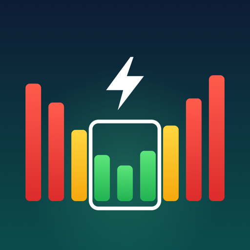

Datenschutzerklärung
für die iPhone-App „WattWann“
Kurz gesagt
Ich als Entwickler erhalte keinerlei Daten aus der App. Es gibt kein Benutzerkonto, keinen eigenen Server, keine Werbung, kein Tracking und keine Analyse- oder Statistikdienste. Die App fragt nicht nach deinem Standort, deinen Kontakten oder anderen persönlichen Daten. Um die Strompreise anzuzeigen, ruft sie öffentliche Börsenpreise aus dem Internet ab. Was dabei übertragen wird, steht unten.
Verantwortlicher
Robert Richter
Am Landgraben 40, 53489 Sinzig, Deutschland
E-Mail: signorependejo@gmail.com
Abruf der Strompreise
Die App und ihre Widgets laden die Day-Ahead-Börsenpreise für Deutschland/Luxemburg von api.energy-charts.info. Dieser Dienst wird vom Fraunhofer-Institut für Solare Energiesysteme ISE (Heidenhofstraße 2, 79110 Freiburg, Deutschland) betrieben. Bei jedem Abruf werden technisch notwendig deine IP-Adresse, die Uhrzeit, eine technische Kennung der App bzw. des Betriebssystems sowie der abgefragte Zeitraum (heute und morgen) übertragen. Angaben zu deinem Stromtarif, deinen Geräten oder deinem Verbrauch werden nicht übertragen.
Die Preise werden nur abgerufen, wenn die App geöffnet ist oder ein Widget aktualisiert wird – in der Regel wenige Male am Tag. Für die Verarbeitung beim Fraunhofer ISE gelten dessen Datenschutzhinweise, die auf energy-charts.info verlinkt sind.
Rechtsgrundlage ist Art. 6 Abs. 1 lit. b bzw. f DSGVO: Ohne diesen Abruf kann die App ihre Funktion – das Anzeigen günstiger Zeitfenster – nicht erfüllen.
Daten auf deinem iPhone
Die zuletzt geladenen Preise sowie deine Einstellungen (Aufschlag auf den Börsenpreis, Mehrwertsteuer, Laufzeiten der Geräte) werden nur lokal auf deinem iPhone gespeichert, damit App und Widgets sie gemeinsam nutzen können. Sie verlassen dein Gerät nicht und werden gelöscht, wenn du die App löschst.
Links
Links in der App, etwa zu SMARD.de, energy-charts.info oder zur Lizenz der Daten, öffnen die jeweilige Website im Browser. Dort gelten die Datenschutzbestimmungen des jeweiligen Anbieters.
Apple
Die App wird über den App Store von Apple vertrieben. Hast du in den iOS-Einstellungen zugestimmt, dass Analysedaten mit App-Entwicklern geteilt werden, stellt Apple mir anonymisierte Absturzberichte und Nutzungsstatistiken zur Verfügung. Diese lassen keine Rückschlüsse auf deine Person zu. Es gilt die Datenschutzrichtlinie von Apple.
Deine Rechte
Da ich keine Daten über dich verarbeite, liegen mir keine Daten vor, über die ich Auskunft geben, die ich berichtigen oder löschen könnte. Für Daten, die beim Abruf der Preise anfallen, wende dich bitte an den Betreiber des Dienstes. Bei Fragen zum Datenschutz kannst du mich trotzdem jederzeit per E-Mail erreichen. Du hast außerdem das Recht, dich bei einer Datenschutz-Aufsichtsbehörde zu beschweren.
Änderungen
Sollte sich an der Datenverarbeitung etwas ändern – etwa durch neue Funktionen oder eine andere Datenquelle –, wird diese Erklärung angepasst.
Stand: November 2026